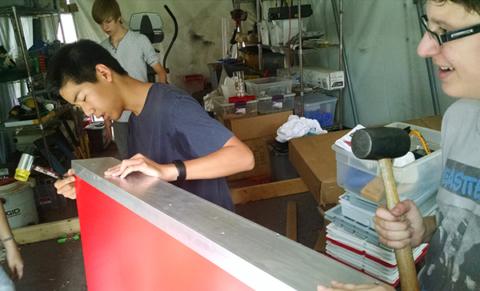
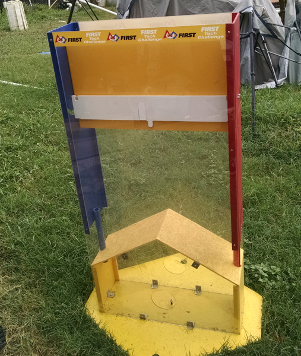

Today we were charged with the task of building the FTC field. There was one problem. The tent we were setting it up in was in a state of decay. We cleaned out the area to make space while others put together the field. It was changed comletely from when it started. When cleaning we discovered many cool things like cassettes and floppy disks. The mat of the field was a little old but we're going to replace it once we get to the fine tuning of the robot. All in all it was a productice day.
We continued our journey and improved the team in a fun and appropriate way. The building of the field contributed to team bonding. Next week, we should be able to start practicing on the field.
